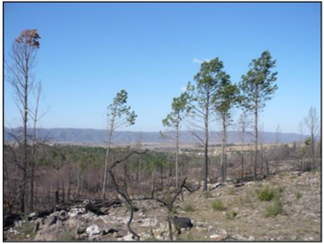

|
I am a Masters Student at the State University of New York at Binghamton in the Department of Geological Sciences, where I am advised by Dr. Jeffrey T. Pietras and funded as a Fulbright Scholar. My masters thesis focuses on the sedimentology and XRF-based chemostratigraphy of the Trenton Group carbonates in the Taconic Foreland Basin in New York. My research interests are in natural and anthropogenic hazards. For my undergraduate dissertation I studied the effects of wildfires on soils from the Calamuchita Valley, Argentina. After graduating with a BS in Geology (honors) from the National University of Cordoba, I was a Junior Geologist at Represas Patagonia. There, I enjoyed carrying out field measurements and applying remote sensing to monitor the stability of the slopes of the Condor Cliff Dam and prevent potential landslides. Outside of the office, you'll find me hiking, practicing swimming, or cooking Argentinian dishes and pastries. |
{kind=link}
|
|

|
Gustavo Villarruel, Other Authors Masters Thesis, Description. |
|  |
Gustavo Villarruel, Gabriela Sacchi, Vanesa Zampar Under Review at Journal of the School of Exact, Physical and Natural Sciences of the National University of Cordoba Water repellency is a property with critical implications on soil erosion, and very sensitive to change after wildfires. This research analyzed the physical (water repellency, granulometry, color) and chemical (pH and organic matter) properties of pre- and post- fire soils, as well as soils heated under controlled laboratory conditions. This allowed us to characterize the changes in hydrophobicity that occur with increasing temperature and determine their causes and the soil temperature at which they occur. |
|
Website template by Jon Barron |